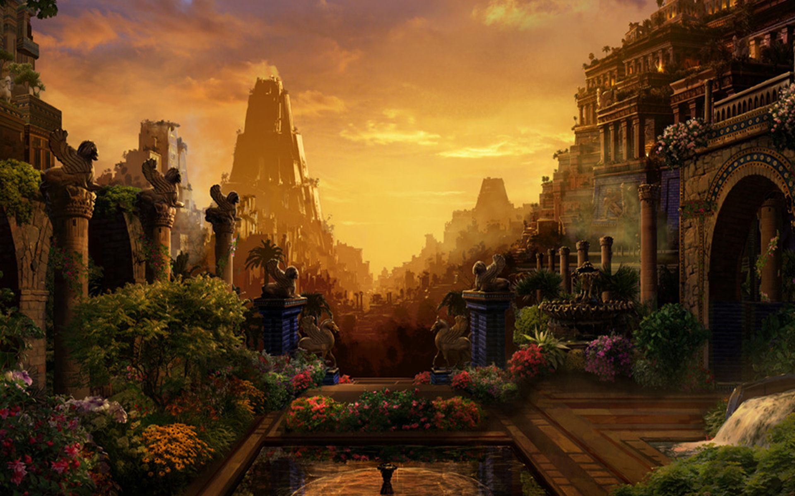
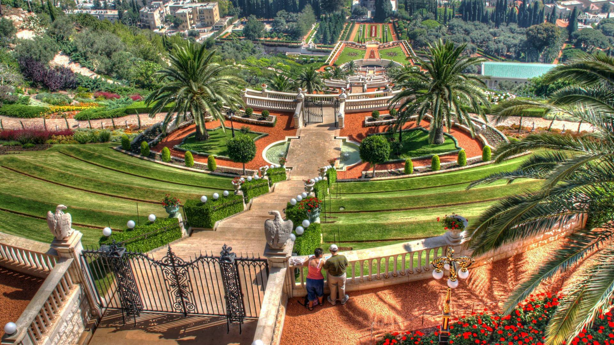
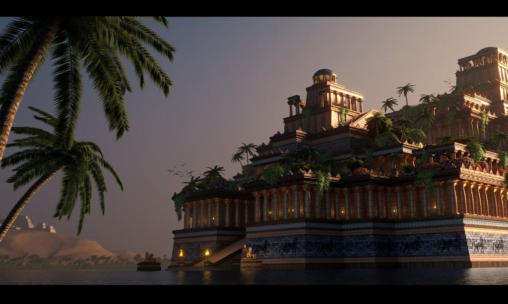
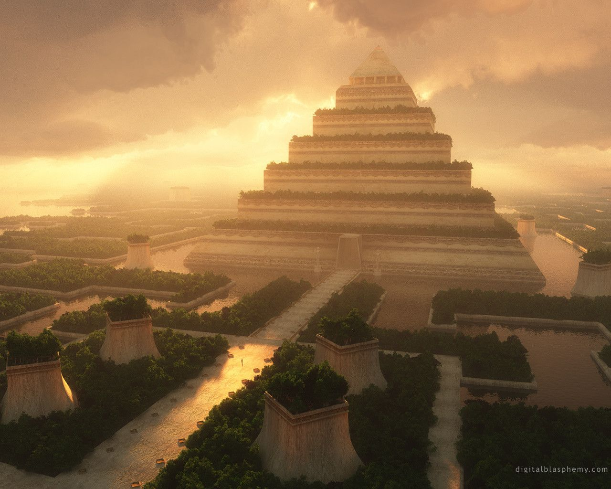
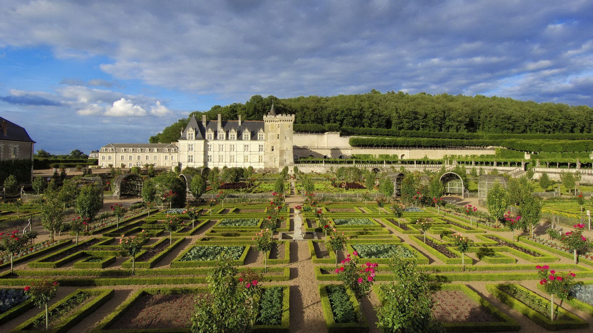

-
Висячие сады Семирамиды
-





Вися́чие сады́ Семирами́ды — одно из Семи чудес античного мира, которое
представляло собой инженерное сооружение в
Вавилоне с каскадом многоуровневых садов, где росли многочисленные породы деревьев, кустарников и виноградных лоз,
производившее впечатление большой зелёной горы. Единственное из Семи чудес, местонахождение которого окончательно
не установлено и, более того, подвергается сомнению сам факт его существования, поскольку не сохранилось
никаких вавилонских текстов, в которых упоминаются эти сады, описания садов имеются лишь у поздних древнегреческих
и римских авторов, а археологические раскопки в районе предполагаемого местонахождения садов также не дали
результатов.
Греческое название сооружения — Κρεμαστοί κῆποι τῆς Βαβυλῶνος — происходит от слова κρεμαστός (буквально —
«нависающий»), которое имеет более широкое значение, чем современное слово «висячий», и относится к деревьям,
посаженным на возвышении, например на террасе[4][5][6].
Согласно одной из легенд, Висячие сады были построены вавилонским царём Навуходоносором II (правил в 605—562 гг.
до н. э.) для своей жены — мидийской царевны Амитис. Другая же легенда приписывает сооружение садов легендарной
царице Семирамиде, которая предположительно правила Вавилоном в IX веке до н. э., за два с лишним века до
Навуходоносора. Вторая легенда получила большее распространение, и соответствующее название закрепилось в
литературе, в том числе русскоязычной.